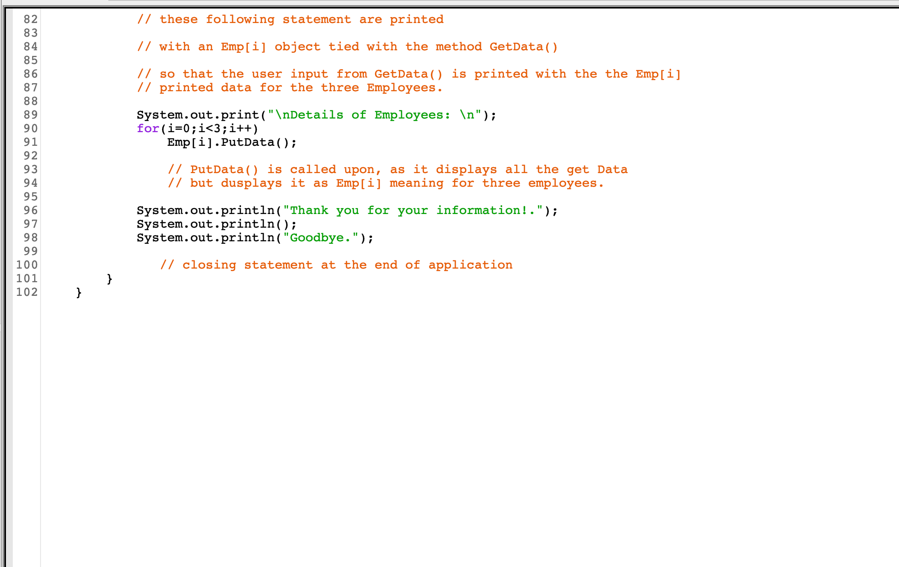
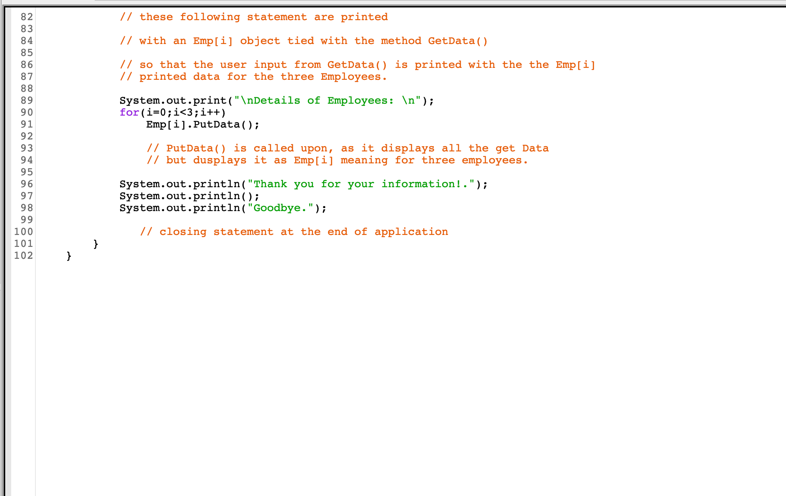
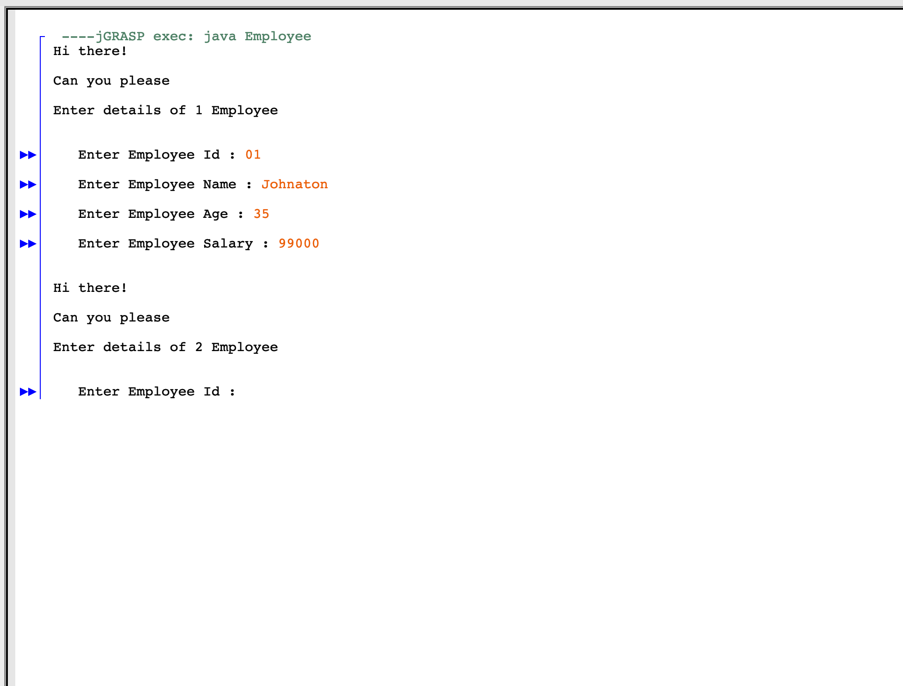
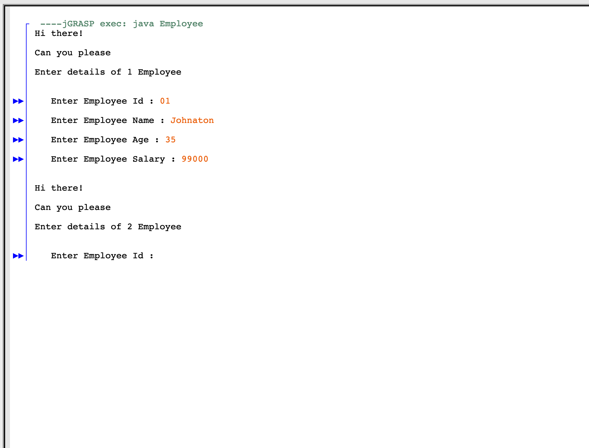
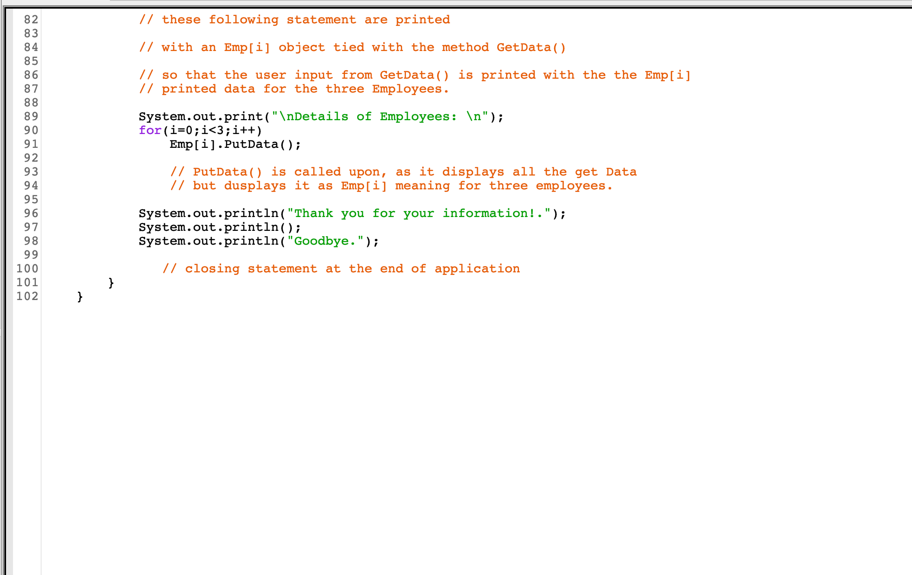
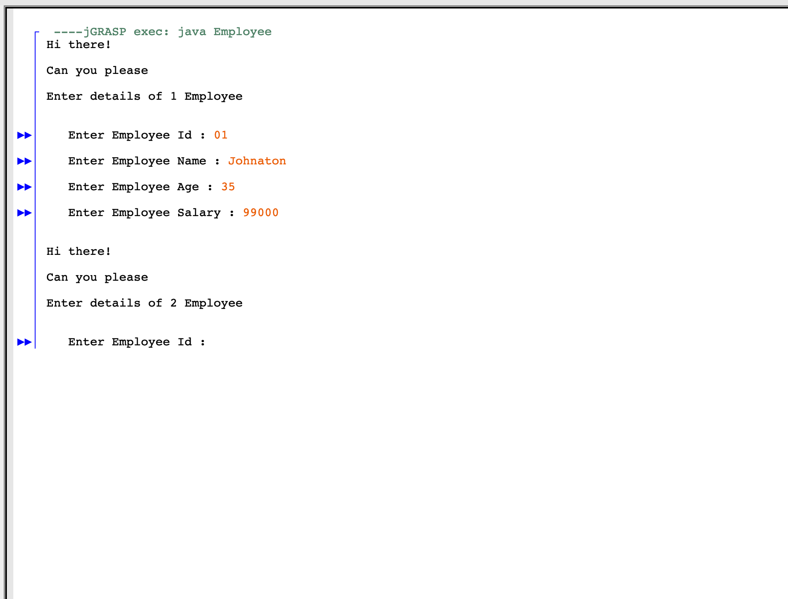

 


Universiteto vyresniais metais dirbau prie „Java“ programos, daugiausia dėmesio skirdama vartotojo įvedimui ir duomenų paskirstymui, remiantis vartotojo įvesties pateikta informacija
Čia yra keletas sukurtos „Java“ programos vaizdų.


Norėdami gauti daugiau informacijos, tikrąjį kodą galite rasti „GitHub“ puslapyje: Paspauskite čia
Spustelėkite čia, jei norite grįžti į pagrindinį puslapį